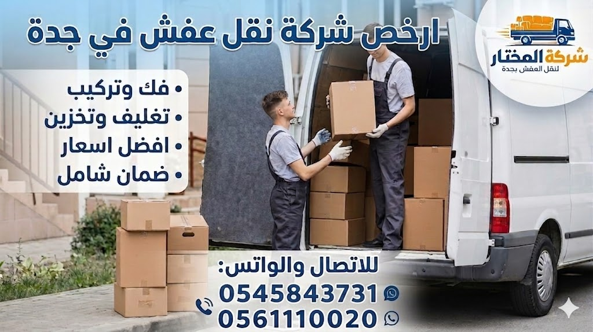

لماذا نحن أرخص شركة نقل عفش بجدة؟
نحن نقدم أسعارًا أقل بفضل فريقنا الخاص الذي يعمل بكفاءة عالية، مما يقلل عدد ساعات العمل ويخفض التكلفة. سياراتنا المجهزة والحديثة تسمح بنقل كميات أكبر في رحلة واحدة، مما يوفر الوقود والجهد. عروضنا المستمرة وخصوماتنا التي تصل إلى 30% تجعلنا الخيار الاقتصادي الأول. نقل عفش داخل جدة معنا يوفر عليك ما يصل إلى 40% من تكلفة الشركات الأخرى. سواء كنت تبحث عن نقل عفش رخيص جدة أو دينا نقل عفش جدة، نحن الخيار الأمثل. خبرتنا التي تزيد عن 15 عامًا تجعلنا قادرين على تقديم خدمات نقل الأثاث بجدة بأسعار تنافسية مع ضمان الجودة. نحن نؤمن بأن نقل العفش يجب أن يكون في متناول الجميع، لذلك قمنا بتحليل التكاليف بدقة. نتعاقد مباشرة مع موردي مواد التغليف بأسعار الجملة، ولا نستخدم وسطاء، مما ينعكس إيجابًا على السعر النهائي. عمالتنا المدربة تنجز العمل بسرعة واحترافية، وتمتلك سياراتنا الخاصة مما يقلل التكاليف التشغيلية. كل هذه العوامل تجعلنا نقدم أرخص أسعار نقل العفش في جدة مع جودة عالية وخدمة سريعة. اتصل بنا اليوم للحصول على معاينة مجانية وعرض سعر لا يُقارن!

أسعار نقل العفش في جدة 2026 (تبدأ من 150 ريال)
شقة صغيرة (1-2 غرفة)
يشمل الفك والتركيب
شقة متوسطة (3-4 غرف)
مع التغليف المجاني
فيلا / قصر
سيارات إضافية حسب الحجم
نقدم أسعار نقل العفش في جدة الأقل مقارنة بالمنافسين. الأسعار تختلف حسب حجم الأثاث والمسافة وعدد العمال المطلوبين. على سبيل المثال، نقل عفش شقة 3 غرف نوم يكلف مع المنافسين 600-1000 ريال، بينما لديك هو 350-700 ريال فقط! وهذا بفضل سياسة "القضاء على الوسيط" والعروض الموسمية. للمزيد عن تكلفة نقل الأثاث بجدة بدقة، نقدم معاينة مجانية في منزلك لتحديد السعر النهائي بدون أي رسوم خفية. نقل عفش جدة إلى مكة له أسعار خاصة، كما أن نقل عفش جدة إلى المدينة المنورة له عروض مميزة. الأسعار التي نذكرها شاملة الفك والتركيب لجميع أنواع الأثاث، بما في ذلك غرف النوم والمطابخ والمجالس. نؤمن بأن الشفافية في الأسعار تبني الثقة، لذلك نحرص على تقديم عروض أسعار مكتوبة وواضحة قبل بدء العمل. لا تتردد في الاتصال بنا للحصول على أفضل سعر يناسب ميزانيتك، خاصة مع وجود عروض التخفيضات المستمرة التي تصل إلى 30% للعملاء الجدد.
خدمات نقل العفش في جدة المتكاملة
نقدم مجموعة شاملة من خدمات نقل العفش في جدة تغطي جميع احتياجات العملاء. نشمل نقل عفش المنازل والفلل، نقل مكاتب وشركات في جدة، وتغليف العفش. فريقنا المدرب ينقل جميع أنواع الأثاث بدقة واحترافية. نستخدم سيارات حديثة مجهزة بأنظمة تثبيت هوائية تمنع تحرك الأثاث أثناء النقل. خدماتنا تشمل نقل فلل ونقل شقق ونقل غرف نوم مع الفك والتركيب. نحن ندرك أن كل عميل له احتياجات مختلفة، لذلك نخصص فريق عمل لكل مهمة. سواء كنت تنتقل داخل نفس الحي أو من مدينة إلى أخرى، نحن نضمن وصول عفشك بأمان تام. لمعرفة المزيد عن خدماتنا المتخصصة، يمكنك زيارة صفحة خدمات نقل العفش بجدة. نقدم أيضًا خدمة فك وتركيب غرف النوم في جدة، وهي من أكثر الخدمات طلبًا. فريقنا يعمل على مدار الساعة لتلبية طلباتك العاجلة. اتصل بنا الآن لطلب خدمة فورية واحترافية.
نقل عفش مع الفك والتركيب بجدة - خدمة احترافية
نحن نقدم خدمة نقل عفش مع الفك والتركيب بجدة باستخدام فنيين متخصصين. الكثير من العملاء يخافون من هذه الخطوة لأنها قد تتسبب في تلف القطع أو ضياع البراغي. لذلك نوفر خدمة فك وتركيب بواسطة فنيين لديهم خبرة تزيد عن 10 سنوات في التعامل مع جميع أنواع الأثاث. نقوم بفك غرف النوم الكبيرة، المطابخ المجمعة، والمجالس العربية بدقة متناهية، مع ترقيم القطع والأدراج لتسهيل إعادة التركيب. نستخدم الأدوات المناسبة لكل قطعة، ونحتفظ بجميع المسامير والمفصلات في أكياس مغلقة ومرقمة. بعد الوصول إلى الموقع الجديد، يعيد فريقنا تركيب كل قطعة في مكانها بدقة متناهية، ونتأكد من عمل جميع الأجزاء المتحركة بشكل سليم. هذه الخدمة متاحة لجميع العملاء بأسعار اقتصادية جدًا. اقرأ المزيد عن فك وتركيب الأثاث في جدة. ننصحك بالاستفادة من الخصم 30% على أول طلب، فخدمتنا توفر عليك الوقت والجهد وتحمي أثاثك من التلف. نضمن لك تركيبًا احترافيًا كما كان أو أفضل. احجز خدمة الفك والتركيب مع أرخص شركة نقل عفش بجدة اليوم. للمزيد من التفاصيل حول فك وتركيب غرف النوم بشكل خاص، يمكنك زيارة صفحة فك وتركيب غرف النوم في جدة.
شركة نقل عفش بجدة بأسعار اقتصادية تناسب الجميع
كوننا أرخص شركة نقل عفش بجدة، نقدم باقات مرنة تناسب الجميع. الميزانية المحدودة لا تعني الحصول على خدمة سيئة. مع شركتنا، يمكنك الحصول على أفضل صفقة. نحن ندرك أن تكاليف الانتقال قد تكون مرتفعة، خاصة مع ارتفاع أسعار الإيجارات. لذلك صممنا باقات مرنة: الباقة الأساسية (نقل فقط)، الباقة المتوسطة (نقل + فك وتركيب)، والباقة الشاملة (نقل + فك وتركيب + تغليف + تخزين). تبدأ أسعارنا من 150 ريال فقط. للمزيد عن عروضنا، زر صفحة اختيار شركة نقل وتغليف مناسبة. نقدم خصومات خاصة للعائلات الكبيرة والشركات والمؤسسات. لا تتردد بالاتصال للحصول على عرض سعر مجاني ومناسب تمامًا لميزانيتك. تذكر أن السعر المنخفض لا يعني أبدًا التضحية بالجودة، فجميع خدماتنا مؤمنة وموثقة بضمانات رسمية. نحن نؤمن بأن الجميع يستحق خدمة نقل عفش آمنة وبسعر عادل. سواء كنت تبحث عن نقل عفش داخل جدة لمسافة قصيرة أو نقل لمسافات طويلة، فإن أسعارنا ستناسبك. ندعوك لتجربة خدماتنا الاقتصادية، وسترى أنك حصلت على أفضل قيمة مقابل أموالك.
أفضل شركة نقل عفش جدة
سؤال يتردد: "من هي أفضل شركة نقل عفش جدة؟" نحن نثبت يوميًا أننا الأفضل بفضل خبرتنا الطويلة التي تتجاوز 15 عامًا، وتقييمات عملائنا 4.8 على Google، وخدماتنا المتكاملة التي تشمل كل شيء من الفك والتركيب إلى التغليف والتخزين. نتميز بالالتزام بالمواعيد، حيث نصل في الوقت المحدد وننهي العمل في أقل وقت ممكن. نستخدم أحدث السيارات المجهزة، ونوفر ضمانًا كتابيًا ضد الكسر. اقرأ المزيد عن أفضل شركة نقل عفش في جدة. تقييمات عملائنا السابقين خير دليل على جودة خدماتنا. نحن نتفوق على منافسينا في: السعر المنخفض، سرعة التنفيذ، جودة التغليف، وحسن التعامل. فريقنا مدرب على أعلى مستوى، وسياراتنا مجهزة بأحدث أنظمة التثبيت. نقدم خدمة عملاء متاحة 24 ساعة طوال أيام الأسبوع، ونتعامل مع جميع أنواع الأثاث بما في ذلك التحف والأنتيكات. جرب خدماتنا وسترى الفرق بنفسك. ندعوك لتجربة الفرق، وسترى أنك اخترت الأفضل بلا منازع. اتصل بنا اليوم للحصول على خدمة نقل عفش لا مثيل لها.

تغليف احترافي للأثاث بجدة - حماية كاملة
التغليف هو الدرع الواقي لأثاثك أثناء النقل. نقدم تغليف عفش بجدة باستخدام أفضل المواد: بلاستيك فقاعي، كرتون مقوى، فوم عازل، وأغطية قماشية سميكة. نقوم بتغليف كل قطعة على حدة، مع تدعيم الزوايا والحواف الأكثر عرضة للكسر. نستخدم الفقاعات الهوائية (البابل راب) للأجهزة والزجاج، والكرتون المقوى للقطع متوسطة الحجم، والأغطية البلاستيكية المتعددة الطبقات للكنب والمراتب، وصناديق خشبية مخصصة للأجهزة الحساسة والتلفزيونات. لمعرفة المزيد عن مواد وأسعار التغليف، يمكنك زيارة صفحتنا المخصصة: تغليف العفش في جدة. نضمن حماية تصل إلى 98% ضد الخدوش والكسر. خدمة التغليف متاحة بشكل منفصل أو كجزء من باقة النقل الشاملة. لا تخاطر بأثاثك، استثمر في التغليف الاحترافي معنا. فريق التغليف لدينا مدرب على أعلى مستوى، ويستخدم تقنيات أوروبية حديثة. التغليف الجيد هو نصف عملية النقل الناجحة، ونحن نأخذ هذه المرحلة بجدية كبيرة. ثق بأثاثك معنا، فسلامته هي أولويتنا.
تخزين العفش في مستودعات آمنة بجدة
هل تحتاج إلى تخزين أثاثك لفترة مؤقتة أثناء تجديد المنزل أو السفر الطويل؟ نقدم خدمة تخزين العفش في جدة من خلال مستودعات حديثة ومؤمنة بالكامل. المستودعات مزودة بأنظمة تكييف للتحكم في الرطوبة ودرجة الحرارة، مما يحمي الأثاث الخشبي والجلدي من التشققات والعفن والتلف. كما تحتوي على كاميرات مراقبة على مدار الساعة، وأنظمة إنذار حديثة ضد السرقة والحريق. نستلم العفش من منزلك، نقوم بتغليفه وتوثيقه، ونقله إلى المستودع، ثم نعيده إليك في الوقت الذي تختاره. أسعار التخزين تبدأ من 200 ريال شهرياً حسب حجم الأثاث. للمزيد من المعلومات حول خدمة التخزين والشروط، ننصحك بزيارة صفحتنا المخصصة: تخزين العفش في جدة. نضمن لك أثاثك بأمان تام، ونقدم عقود تخزين مرنة حسب احتياجك. سواء كانت فترة تخزين قصيرة (أسبوع) أو طويلة (سنة)، نحن نلبي طلبك بأفضل الأسعار. المستودعات تقع في مواقع استراتيجية قريبة من جميع أحياء جدة لتسهيل عملية الإيداع والسحب. اتصل بنا الآن لحجز مساحة التخزين المناسبة لك.
نقل عفش آمن بدون تلف - نضمن سلامة ممتلكاتك
نحن نضمن نقل عفش آمن بدون تلف باستخدام أحدث مواد التغليف والتثبيت. نستخدم أحزمة تثبيت احترافية، وفواصل لحماية الأثاث من الاحتكاك، ومواد مانعة للانزلاق. سياراتنا مجهزة بأنظمة GPS لمتابعة المسار، وتكييف للحفاظ على الأثاث الحساس. نضمن وصول عفشك بدون أي خدوش أو كسور، أو نتحمل المسؤولية كاملة. نقدم ضمانًا كتابيًا ضد الكسر والتلف لمدة أسبوع كامل بعد النقل. اطلع على تخزين العفش في جدة أيضًا. فريقنا يتبع إجراءات صارمة لضمان السلامة: فحص كل قطعة قبل وبعد النقل، استخدام مواد عازلة للصدمات، وتدريب مستمر للعمال على أحدث تقنيات النقل الآمن. نحن ندرك أن أثاثك يمثل استثمارًا كبيرًا وقيمة عاطفية، لذلك نتعامل مع كل قطعة وكأنها قطعة فنية ثمينة. ثق بأثاثك مع خبراء النقل الآمن. اتصل بنا اليوم لتجربة نقل خالية من القلق والتلف.
نغطي جميع أحياء ومدن جدة
نقدم خدمات نقل عفش جدة في جميع الأحياء والمدن التالية. نغطي شمال جدة، جنوب جدة، وسط جدة، وجميع الأحياء مثل الصفا، النسيم، الروضة، الحمدانية، النخيل، الشاطئ، السلامة، الفيصلية، وغيرها. كما نقدم خدمة نقل العفش بين جدة والمدن الأخرى. فيما يلي قائمة بأهم الأحياء والمدن التي نخدمها. انقر على اسم الحي أو المدينة لزيارة الصفحة المخصصة والحصول على عروض خاصة:
نخدم أيضًا حي النسيم، حي الروضة، حي البوادي، حي النهضة، حي الأندلس، وكل أحياء جدة. بغض النظر عن موقعك، نحن على بعد مكالمة واحدة. نقل عفش شمال جدة وجنوب جدة يتم بنفس السرعة والجودة. فريقنا على دراية كاملة بشوارع جدة وأزقتها، مما يساعد على الوصول السريع وتجنب الازدحام. اتصل بنا الآن للحصول على خدمة فورية.

خطوات العمل معنا - تجربة سلسة من البداية إلى النهاية
تواصل معنا
اتصل أو أرسل واتساب
معاينة مجانية
تقييم العفش وتحديد السعر
تغليف وفك
باستخدام أفضل المواد
نقل وتركيب
في الموقع الجديد بسرعة
نحن نضمن لك تجربة سلسة وخالية من التوتر. من أول مكالمة حتى آخر قطعة يتم تركيبها، نكون معك خطوة بخطوة. أولاً، تتواصل معنا عبر الهاتف أو الواتساب، ويتم الرد عليك فورًا. ثانيًا، نرسل فريقًا متخصصًا لإجراء معاينة مجانية في منزلك، حيث يتم تقييم حجم الأثاث ونوعه، وتحديد عدد العمال والوقت المناسب. ثالثًا، يتم الاتفاق على السعر كتابيًا بدون أي رسوم خفية. رابعًا، نبدأ في عملية الفك والتغليف باستخدام أحدث المواد والتقنيات. خامسًا، نقوم بنقل الأثاث باستخدام سيارات مجهزة حديثًا. سادسًا، نعيد تركيب الأثاث في موقعك الجديد بدقة متناهية. وأخيرًا، نتأكد من رضاك التام عن الخدمة. هذه العملية المنظمة هي ما يجعلنا أرخص شركة نقل عفش بجدة مع أعلى مستويات الجودة. اتصل بنا لتبدأ رحلة نقل مريحة.
جدول مقارنة الأسعار والخدمات - لماذا نحن الخيار الأفضل؟
قارن بنفسك بين خدماتنا وخدمات الشركات الأخرى في جدة. النتائج واضحة: نحن الأسرع، الأرخص، والأضمن. هذا الجدول هو دليل قاطع على أن أرخص شركة نقل عفش بجدة هي شركة المختار. ندعوك لمقارنة الأسعار بنفسك، وستجد أن التوفير الذي تقدمه شركتنا قد يصل إلى 500 ريال وأكثر في النقلة الواحدة.
| الخدمة / الميزة | ✅ شركة المختار | ❌ متوسط الشركات الأخرى |
|---|---|---|
| سعر نقل شقة 3 غرف نوم | 250 – 500 ريال | 600 – 1000 ريال |
| فك وتركيب مجاني | ✔️ شامل بدون رسوم | ❌ برسوم إضافية (150-300 ريال) |
| تغليف احترافي | ✔️ مواد فاخرة مجاناً في الباقات | ❌ تغليف بسيط أو رسوم منفصلة |
| وقت التنفيذ | ✔️ 3-5 ساعات | ❌ قد يستغرق يوم كامل |
| ضمان ضد الكسر | ✔️ ضمان كتابي لمدة أسبوع | ❌ ضمان محدود أو غير موجود |
| خدمة العملاء | ✔️ 24/7 عبر الهاتف والواتساب | ❌ ساعات عمل محدودة |
| سيارات نقل مجهزة | ✔️ أسطول حديث ومتنوع | ❌ قديمة أو غير مخصصة |
| تخزين مؤقت آمن | ✔️ مستودعات مكيفة ومراقبة | ❌ غير متوفر أو غير آمن |
الأسئلة الشائعة عن نقل عفش جدة (15 سؤالاً)
1. كم سعر نقل العفش في جدة مع الفك والتركيب؟
أسعارنا تبدأ من 150 ريال للشقة الصغيرة وتصل إلى 1500 ريال حسب حجم الأثاث. اتصل لمعاينة مجانية وعرض سعر دقيق.
2. هل تشمل الخدمة الفك والتركيب لجميع أنواع الأثاث؟
نعم، نوفر فك وتركيب الأثاث بجدة لجميع الأنواع (غرف نوم، مطابخ، مجالس، مكيفات) بدون رسوم إضافية.
3. هل يتوفر تغليف احترافي للعفش؟
نعم، تغليف احترافي باستخدام الفقاعات الهوائية والكرتون المقوى والفوم العازل.
4. كم تستغرق عملية نقل العفش من البداية إلى النهاية؟
عادة 3-6 ساعات حسب حجم الأثاث والمسافة. للشقق الصغيرة قد ننتهي في أقل من 3 ساعات.
5. هل يوجد ضمان على الأثاث أثناء النقل؟
نعم، ضمان كتابي ضد الكسر والتلف لمدة أسبوع كامل. في حالة حدوث أي ضرر، نتحمل المسؤولية.
6. هل تغطون جميع أحياء جدة؟
نعم، جميع الأحياء بما فيها شمال جدة، جنوب جدة، وسط جدة، وكل الأحياء مثل الصفا، النسيم، الروضة، الحمدانية.
7. كيف أحصل على عرض سعر دقيق؟
اتصل بنا على 0561110020 أو أرسل واتساب على 0545843731 لمعاينة مجانية في منزلك.
8. هل لديكم خدمة تخزين العفش في مستودعات؟
نعم، تخزين العفش في جدة بمستودعات مكيفة ومؤمنة بالكامل بأسعار تبدأ من 200 ريال شهرياً.
9. هل تنقلون المكاتب والشركات؟
نعم، لدينا فريق متخصص لـ نقل مكاتب وشركات يتعامل مع الأجهزة والمعدات الحساسة.
10. هل الأسعار شاملة التغليف؟
نعم، الباقات المتوسطة والكاملة تشمل التغليف المجاني باستخدام أفضل المواد.
11. ما هي أنواع سيارات النقل التي تستخدمونها؟
سيارات حديثة مغلقة ومجهزة بأنظمة تثبيت هوائية، بأحجام مختلفة تناسب جميع أنواع النقل.
12. هل تعملون أيام الجمعة والعطلات الرسمية؟
نعم، نعمل 7 أيام في الأسبوع بما في ذلك العطلات الرسمية وأيام الجمعة لخدمة عملائنا.
13. كيف تضمنون عدم كسر الزجاج والمرايات؟
نستخدم تغليف خاص متعدد الطبقات، وصناديق خشبية مخصصة للقطع الزجاجية، ونضع علامات تحذيرية.
14. هل تقدمون عروض وخصومات حالياً؟
نعم، خصم 30% على أول طلب، وخصم 20% على الحجز المبكر، وعروض خاصة للشركات والمؤسسات.
15. كيف أتواصل معكم بسرعة؟
اتصل على 0561110020 أو واتساب على 0545843731، فريق خدمة العملاء جاهز للرد على مدار الساعة.